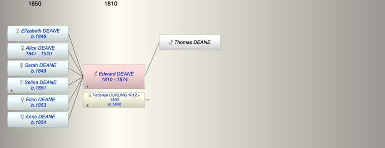

| [Index] |
| Edward DEANE (1810 - 1874) |
|  |
| b. 1810 at Oxfordshire |
| m. 1842 Patience CURLING (1812 - 1899) |
| d. 23 Mar 1874 aged 64 |
| Parents: |
| Thomas DEANE |
| Children (6): |
| Elizabeth DEANE (1846 - ) |
| Alice DEANE (1847 - 1910) |
| Sarah DEANE (1849 - ) |
| Selina DEANE (1851 - ) |
| Ellen DEANE (1853 - ) |
| Anne DEANE (1854 - ) |
| Events in Edward DEANE (1810 - 1874)'s life | |||||
| Date | Age | Event | Place | Notes | Src |
| 1810 | Edward DEANE was born | Oxfordshire | ex 1851 census | ||
| 1842 | 32 | Married Patience CURLING (aged 30) | Reg Newington | ||
| 1846 | 36 | Birth of daughter Elizabeth DEANE | Shoreditch | ex 1851 census | |
| 1847 | 37 | Birth of daughter Alice DEANE | ex census | ||
| 1849 | 39 | Birth of daughter Sarah DEANE | Shoreditch | ex census | |
| 1851 | 41 | Birth of daughter Selina DEANE | Shoreditch | ex census | |
| 1853 | 43 | Birth of daughter Ellen DEANE | Shoreditch | ex census | |
| 1854 | 44 | Birth of daughter Anne DEANE | Hackney | ex census | |
| 23 Mar 1874 | 64 | Edward DEANE died | of Denmark Hill ex Probate | ||
| Created on a Mac™ using iFamily for Mac™ on 8 Oct 2023 |